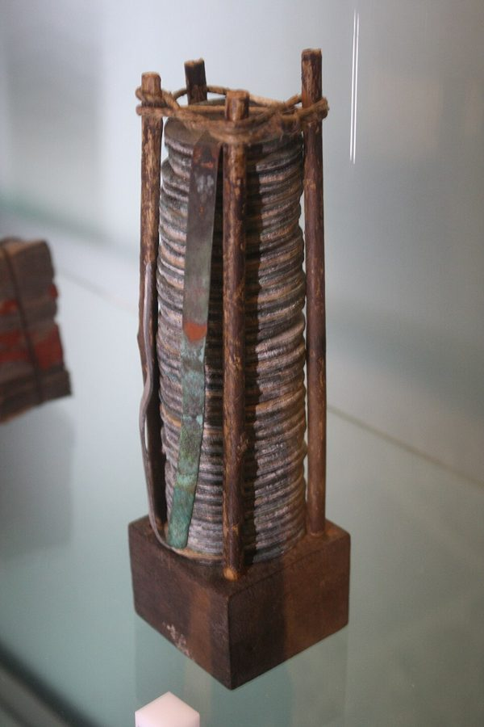
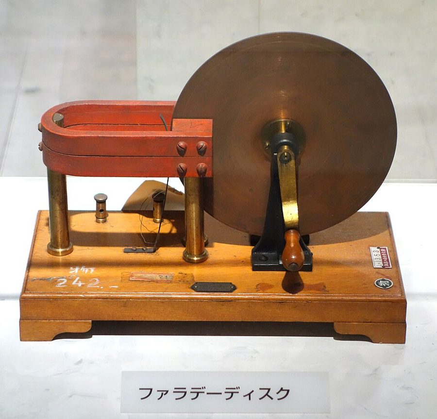
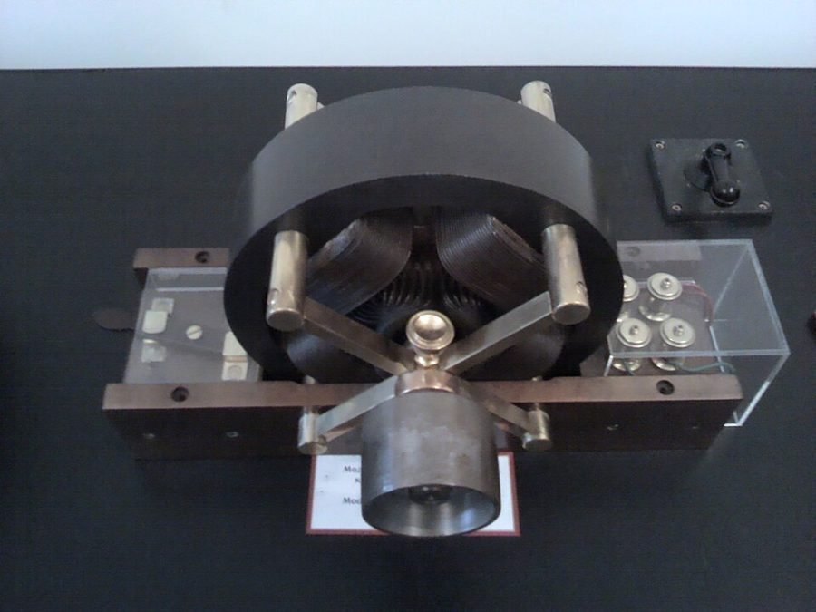
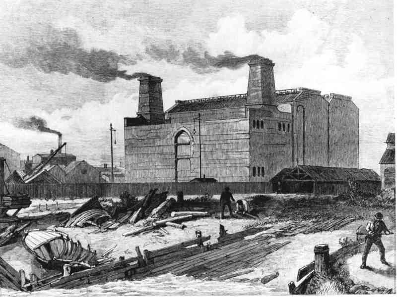
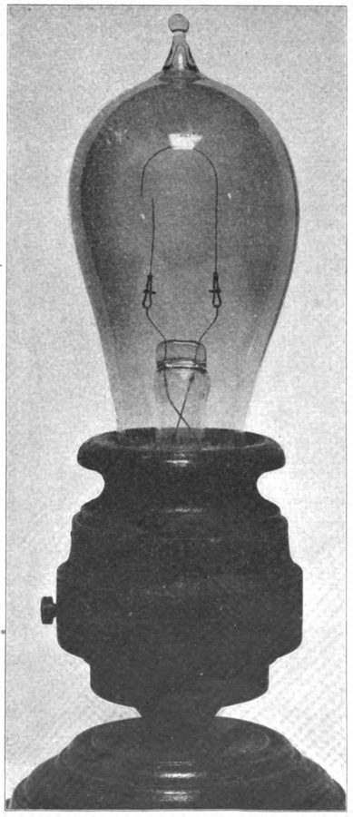
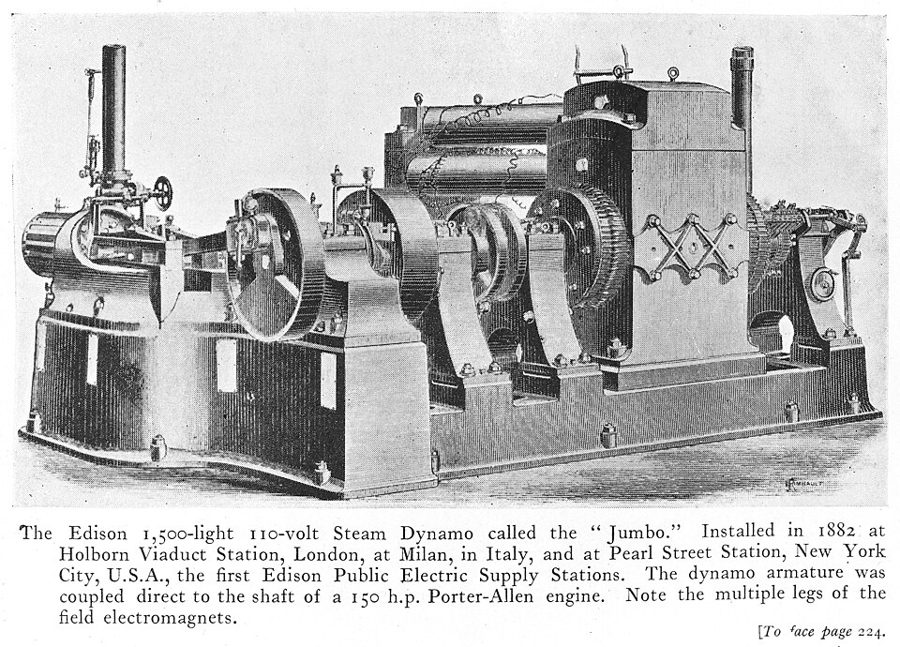
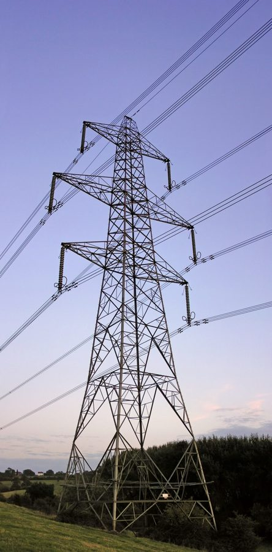

opposites attract
… Do opposites attract? There is some …
异性相吸；性格相反的人互相吸引
英语谚语，多说人。作者拿它开头，一语双关：先说择偶，再说磁铁的南北极。
第 4 章是作者五个「时代」里的第三个：电磁。这一页是前半章，讲电怎样造出来、送出去。骨架只有两步：法拉第发现变化的磁场能生出电流，机械功从此能变成电，电也能变回转动；半个多世纪后，交流靠变压器赢了直流，因为同样的功率用高电压送，电流小，线上烧掉的就少。其余是一长串人名和「第一」，可以挑着读。§2 和 §4 先读，§4 配模拟器。
第 3 章讲热怎样做功：从蒸汽机到汽轮机、喷气发动机和核电。第 4 章是作者自己划的第三个「时代」，电磁。这一页从电荷讲到电网：先是一串发现，再是发电机、交流和变压器，最后落到电站靠什么转，又回到第 3 章的汽轮机。04b 接着讲法拉第的「场」、电磁波和通信。
别被带歪：书在 §4 讲完交流胜出，§5 才讲爱迪生 1882 年的珍珠街电站，又没说它是直流站。珍珠街送的是直流，比特斯拉的旋转磁场（1888）、德特福德（1891）都早。§5 说爱迪生灯泡的灯丝是铜的，其实是碳丝。
同样送 10 兆瓦，为什么要先升到十几万伏再送，到了家门口又降下来？
读的时候带着这几个问题，读完回来对照「检查一下理解」。
原书这一章没有小标题，一口气写下来。下面的节是本站按段落分的：粗体是本站起的节名，后面是档和英文词数；再下面是这一节开头的几个英文词，在 Kindle 里搜它就能跳过去。读完打个勾。
先把这一页用到的几个概念用书外的例子讲一遍。作者拿它们推出什么，读原书时自己看。后面各页用到时会链回这里。
原子核里的质子带正电，外面的电子带负电，平常两样一样多，整个原子不带电。拿气球蹭毛衣，电子从一边跑到另一边，两边带上异号的电荷，就互相吸；梳头时头发带上同号的电荷，就互相推开、竖起来。电荷待着不动是静电，流动起来就是电流。习惯上说电流从正极流向负极，电子其实是反着跑的。
两个电荷之间的力和距离的平方成反比（库仑定律）：距离加倍，力变成四分之一。最早存电荷的东西是莱顿瓶，今天叫电容器，04b 的振荡电路还要用它。
在这一页：§1 用一段话讲电荷，书后注给了库仑定律的公式。第 5 章讲晶体管也从这里起步。
拿水管打比方：电压是两头的水压差，电流是每秒流过多少水，电阻是管子又细又长挡着水。欧姆定律说三者的关系：电压 = 电流 × 电阻。
书里没写、可 §4 整段全靠它的一条：电的功率 = 电压 × 电流。同样 2400 瓦的电热水壶，接 240 伏要 10 安，接 120 伏要 20 安。导线本身也有电阻，电流流过就发热，烧掉的功率 = 电流² × 电阻。电流加倍，线上的发热变成四倍。所以送同样多的电，电压越高，电流越小，路上烧掉的越少。
在这一页：§2 欧姆定律一句带过；§4 交流为什么赢、「动手：模拟器」都靠这两条式子。
导线里的电流会在周围造出磁场，指南针靠近会偏。反过来，穿过一圈导线的磁场在变，导线里就生出电流；磁场不变，就没有。这叫电磁感应。让磁场变的办法：开关、增减电流，或者让线圈在磁铁旁边转。
发电机就是让线圈在磁场里转。线圈的两条边每转半圈，切磁场的方向就翻一次，转出来天然是一正一负来回变的交流。要直流，就在轴上装换向器，每转半圈把两根引线对调一次，输出成了同一方向的一串「驼峰」。电动机是同一种机器倒过来用：通上电，它就转。电磁炉、手机无线充电也靠感应。
在这一页：§2 法拉第的圆盘；§3 发电机一代代改进；§4 那句 A motor is a generator in reverse。
直流的方向不变，电池、手机充电器输出的都是。交流的方向一秒钟来回几十次，每秒几个来回叫频率，单位赫兹：中国和英国 50 赫，美国 60 赫。家里插座的电压，中国 220 伏，英国今天标称 230 伏（书里的 240 伏是 1995 年以前的标称），美国标称 120 伏（书里写 110）。
三相是三路交流，峰谷依次错开三分之一个来回（120 度）。把它们通进围成一圈的三组线圈，合起来的磁场就在圈里转，这是旋转磁场。放一个转子进去，它被感应出电流，跟着磁场转，这就是感应电动机，数不清的水泵、风机、压缩机靠它转。
在这一页：§4 特斯拉的旋转磁场、感应电动机和那个串电阻的例子；§6 英国电网定在 50 赫。
变压器是一个铁芯上绕两组线圈。一组通交流，铁芯里的磁场跟着来回变，另一组就感应出电压；两组的匝数比是几，电压就变几倍。匝数比 1 比 10，230 伏升成 2300 伏，电流变成十分之一，功率基本不变。它只认变化的磁场，直流通进去，另一组什么也没有：这是交流当年赢的关键。
为什么要升压送：线上的发热 = 电流² × 电阻。送 10 兆瓦，11 千伏要 909 安，132 千伏只要 76 安，电流成了十二分之一，发热成了 144 分之一。代价是绝缘：电压越高，绝缘子串越长，铁塔越高，越难安全操作。
在这一页：§4 交流胜出的理由；§6 英国电网的 132、275、400 千伏；「动手：模拟器」。
先猜：同一条线送同样多的电，把输电电压从 132 千伏提到 400 千伏（约 3 倍），线上烧掉的电变成原来的多少？三分之一，还是更少？
一座电站沿一条线往城里送电。调要送多少电、线有多少电阻、用多高的电压送，看线上的电流、路上烧掉多少、到用户手里还剩多少。打开页面时是 132 千伏送 10 兆瓦。
需要浏览器打开脚本才能运行。
各个控件：「要送多少电」是电站往这条线上送的功率，1 兆瓦是一千千瓦；「线路电阻」是整条线的电阻，线越长、越细，电阻越大，5 欧大致是几十公里的架空线；「输电电压」的六档都是书里出现过的数：240 伏是英国家用，132、275、400 千伏是英国电网 1926、1949、1965 年用上的电压。图上是在这个功率和电阻下，电压从 0 到 400 千伏，线上烧掉的电占送出的百分之几，竖线是你选的电压。图下一排是六档电压各烧掉多少。
这里的功率、电阻都是本站定的演示值，书里只给了道理，没有算例。模型只算一件事：电流 = 功率 ÷ 电压，线损 = 电流² × 电阻；不算线上的电压降、三相、功率因数和变压器自己的损耗，真实电网的线损比这复杂，但「电压升 3 倍，线损约变成九分之一」这一条不变。
书里点名的人、发明和工程，挑读懂这一页用得上的讲。按在书里出现的顺序排，节号是你在书里哪一节遇到它。
伽伐尼解剖青蛙时看到蛙腿抽动。伏打看出这其实是电池的原理：两种金属中间夹着湿的东西，只不过夹的是生物组织。他改用银片和锌片，中间垫浸了水或盐水的纸板，一层层摞起来，1800 年公布。英文管它叫 pile，就是「一摞」。在这以前，存电只能靠莱顿瓶，一放就完；电堆能源源不断地供电，后面的法拉第才有电流可用。

他出身贫寒，做过装订学徒，听了戴维的讲座后去给他当助手，几乎不用数学，全凭实验和画图想问题。皇家研究院是伦敦的科研和科普机构。1821 年他让通电的导线绕着磁铁转，也让磁铁绕着导线转：电能做功。1831 年他发现电磁感应，美国的约瑟夫·亨利差不多同时也独立发现了；一个月内他造出法拉第圆盘，铜盘在强磁铁两极之间一转，就有电流：功能变成电。

在特斯拉以前，交流发电机已经有人造，可几台的波形对不齐，只能各自单独运转。特斯拉宣布：几路错开相位的交流通进几组线圈，能造出一个转动的磁场。书里把他的装置叫 induction alternator（感应交流发电机），讲的是它怎样发出两路、三路交流；他那几年最出名的其实是靠旋转磁场转起来的感应电动机，书里紧接着讲的就是它。有了能直接用交流的电动机，交流才不只能点灯。

1880 年代末到 1890 年代初，爱迪生的直流和西屋、特斯拉的交流争市场，后人叫它「电流之战」（War of the Currents），书里没用这个名字。书里说，爱迪生以为工厂会买他的零件自己发电，没看到大电站和全国电网这一步，最后「不得不」改用交流；他还借公开用交流电处死动物，放大人们对交流的恐惧。史实另说一句：改用交流的是他的公司。1892 年，爱迪生通用电气和手握交流专利的汤姆孙–休斯顿公司合并成通用电气，由对方的 Charles Coffin 当总裁，爱迪生从此不再掌舵。
两人押的是同一个方向：电要集中在大电站里发。英斯尔看出大型中心电站发的电，比各家工厂自己发便宜；书里说他把公司从 1892 年芝加哥 12 家里最小的一家，做到 1920 年的 50 万户。费兰蒂早早押宝交流。书里说德特福德 1891 年成了第一座现代电站：高压交流送出，到用户那头降压，这套格局全世界至今在用。它的发电机出 2500 伏，升到 1 万伏送进伦敦城里，是高压交流的先驱。

白炽灯是让电流把一根细丝烧到发白发光。书里说斯旺 1860 年就在用碳化的纸做灯丝，可真空抽不好、电也供不上，灯泡很快烧坏；到 1881 年他已拿到英国专利，给自家装上电灯，开了公司。1879 年初他在纽卡斯尔当众演示过白炽灯。爱迪生同一时期在美国做灯泡，书里说他的灯丝是铜的，其实是碳丝。两人后来在英国打专利官司，1883 年合组一家公司，通称 Ediswan。

爱迪生要拿电灯取代煤气灯：煤气耗氧、有毒、熏黑墙壁，有时还会爆炸。他卖的是一整套：新的发电机、并联电路（每盏灯各开各关）、地下电缆、电表、保险丝、开关、插座。纽约珍珠街电站 1882 年 9 月 4 日开始供电，送的是 110 伏直流，书里放在交流胜出之后讲，没说这一点。书里给的台数、灯数、户数没说是哪个时点；常见记载是开张时八十来户、约 400 盏灯，到 1884 年五百多户、一万多盏灯，书里的数落在两者之间。

书里说 1918 年光伦敦一地就有 70 家供电机构、50 种系统、10 种频率、24 种电压。1926 年英国议会立法成立中央电力局（Central Electricity Board），建起 132 千伏、50 赫的全国交流电网：1933 年各地区电网连起来，1938 年作为一个全国系统运行。后来又加了 275 千伏、400 千伏的线路。书里的 denationalized 是英式说法，就是私有化。美国的大陆电网约 30 万公里线路，由约 500 家公司经营。

读英文原书时值得停一下的词和句：工程里的熟词生义、英式说法、作者的比喻。灰色斜体是原句里连续的几个词，在 Kindle 里搜它就能找到；标「每个字都认识」的，是每个词都眼熟、合起来意思却变了的，最容易读错。点「记下」收进词本。
下面是作者在这一页里的主张，本站按主张之间的逻辑重排，不按原书顺序；每条后面是节号，拿不准就回书里那一节再读一遍。
他先让通电的导线绕着磁铁转，再发现变化的电流能在另一个线圈里感应出电流，接着造出发电机。「电气工程之父」这个称呼，作者说是许多人给的。
§2He had demonstrated that mechanical work could be converted into electricity.— §2。本站译：他证明了机械功可以变成电。
线圈对着磁铁转，电流方向每半圈翻一次，天然是交流；那时人们偏爱直流，只好加换向器翻过来。帕奇诺蒂的机器既能发电又能当电动机；作者说电动机就是倒过来的发电机。
§2 §3 §4直流只能按负载要的电压发，送不远；给低压的灯配高压电源，只能串电阻白烧。线损是电流的平方乘电阻，同样的功率用高电压、小电流送，损耗就小，变压器让交流能升压送出、到用户那头再降下来。高压的代价是绝缘和安全。
§4But the development of the transformer was pivotal for AC.— §4。本站译：而变压器的发展对交流是决定性的。
大型中心电站比各家自己发电便宜；1890 年代起，交流能把电送到很大一片地方，发电机不必挨着用电的地方，一种新的工程师出现了。英国 1926 年起建 132 千伏、50 赫的全国交流电网，收拾一地几十家各自为政的局面。
§5 §6各国电网的电主要来自热机带动的发电机，多是蒸汽推汽轮机；不过只要能转动电枢，风车、水轮也行。热电联产把废热也用上，总效率超过七成。
§6合起来：这一页讲电怎样成了一种能大规模生产、远距离送的「功」。法拉第打通了功和电，交流和变压器解决了「送」，大电站和电网解决了「便宜」。作者讲成一条进步的路，转折点是变压器。
书 2012 年出版。下面挑出这一页里能被后来的研究或事情检验的说法，分「书里 / 当时 / 今天」几栏，并给一个结论。结论判的是标题里「书里的说法：」后面那一句。全书的这一节汇总在今天怎么看。
读完作者的主张，再看它站不站得住。每一块摆出三样：主流怎么看，作者怎么看，本站的评论。最后一句是本站对这一页的总体判断。
主流看法：技术史一般把交流胜出讲成几样东西一起到位：能升降压的变压器，能直接用交流的电动机，能把许多用户连起来的大电站。1880 年代的直流也有它的道理：电压低、较安全，电表、电动机现成。商业上的结局是 1892 年的合并：爱迪生通用电气和握有交流专利的汤姆孙–休斯顿合成通用电气，总裁是汤姆孙–休斯顿的 Charles Coffin，爱迪生失去了对公司的控制。
作者的看法：爱迪生死守小规模直流，看不到大电站和全国电网这一步，最后不得不改用交流。§4
本站的评论：书把输赢讲成一个人的眼光，读起来痛快，但容易让人记成「直流是错的」。直流的毛病是那时没法升压；一旦电力电子能给直流升降压，最长的输电线反而用直流。你手里的手机、电脑、LED 灯，屋顶的光伏板和电池，内部都是直流。交流赢下的是 20 世纪的电网，赢在当时的配套条件。
主流看法：斯旺 1879 年初就在纽卡斯尔演示白炽灯；斯旺和爱迪生在英国为专利起了纠纷，两家 1883 年合组 Ediswan。爱迪生的霍尔本高架桥电站和珍珠街电站 1882 年就开始对外供电，是最早的一批公用电站，送的是低压直流；德特福德 2500 伏发电、升到 1 万伏送，是高压交流电站的先驱。
作者的看法：德特福德 1891 年是第一座现代电站，高压交流送出、到用户那头降压，这套格局沿用至今。§5
本站的评论：第一座公用电站、第一座高压交流电站、第一只白炽灯、第一只能卖的白炽灯，答案各不相同。作者给德特福德的限定词是「现代」，理由是它的格局今天还在用，这个理由站得住。读这一页的一长串「第一」，看它后面跟的是哪个限定词。
本站的总体看法：§2 和 §4 最值得读：感应把功和电接上，变压器和线损的账说明了电网为什么长成今天这样。其余是发现史清单，几处年份和细节不准（如铜丝）。交流胜出别读成爱迪生个人的失败，今天的直流输电正好是反例。
先在心里答，再点开。答错的那题，回书里把对应那一节再读一遍。
没有。只有第一个线圈的电流在变（接通、断开、变大变小）时，它的磁场在变，第二个线圈里才感应出电流。
线圈每转半圈，它的两条边切磁场的方向就翻一次，电流的方向也跟着翻。要直流，得加换向器每半圈把引线对调。
电流变成三分之一，发热跟着电流的平方走，变成九分之一。5 欧的线上，从约 4130 千瓦降到约 459 千瓦。
串一个电阻（或再串一盏 120 伏的灯）把多出的 120 伏吃掉。电阻和灯流过同一股电流、各分 120 伏，一半的电在电阻上变成热。
变压器靠一组线圈里变化的磁场在另一组里感应出电压。直流的磁场不变，另一组感应不出东西。
珍珠街（1882）是 110 伏直流。德特福德（1891）用高压交流送出、到用户那头降压，这套格局今天还在用。
普通电站把发电剩下的热直接排掉；热电联产把这些热拿去产蒸汽、供热水，同一份燃料用了两回。
用一句话说这一页：
想一想：家里插座给的是交流，可手机、电脑、LED 灯里面用的都是直流。你身边哪些东西带着一个把交流变成直流的「小方块」？如果当年赢的是直流，今天的电网会是什么样？
读过又忘了，从这里想起来。挑的是这一页最值得记住的例子和说法，不按原书顺序；每条后面是节号，想细看就回书里那一节。全书各页的这一节都收在全书回顾。
一句话：变化的磁场生出电流，功和电从此能互换；交流靠变压器升压送远，因为线上的发热跟着电流的平方走。
法拉第发现，稳定的电流在旁边的线圈里什么也感应不出，电流一变才有。一个月后他造出铜盘发电机。
§2线圈在磁场里转就发电，给线圈通电它就转。转出来的天然是交流，直流要靠换向器翻。
§2送同样多的电，电压越高电流越小，线上发热跟着电流的平方降。132 千伏升到 400 千伏，烧掉的约剩九分之一。
§4直流时代给 120 伏的灯接 240 伏电源，只能串电阻吃掉多的电压。变压器让交流不必这么浪费。
§4爱迪生 1882 年的珍珠街电站送 110 伏直流，比特斯拉、德特福德都早；他的灯丝是碳丝，不是书里写的铜丝。
§52024 年拉特克利夫关停，英国 142 年的煤电到此为止。书里「电网主要靠热机」的格局正在松动。
§6